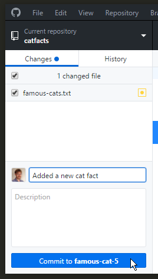

We're using Git to write some documents about cats.
One document is a list of famous cats. The other is a list of interesting cat facts that are totally true.
We'll use Post-It notes to make sure we each work on a different task, because if we all do the same thing that would be silly?
Part 1: Install Atom (text editor)
Download Atom (if you haven't already) and install it.
Part 2: Create a Github account at github.com
Go to github.com and sign up for a new account.
Go to our slack channel and tell us your Github username. Then we will give you permission to edit the cat facts!
Part 3: Install Github Desktop
This is an app that works with the Github website.
Download Github Desktop if you haven't already. Install it, and log in with your new Github user name and password.
Part 4: Cloning
Our cat facts are stored on github.com. 'Cloning' means making a copy on your computer so you can work on it.
Go to the cat facts web page: cat facts.
Click on the little 'Clone in Desktop' button on the right hand side. Github Desktop should pop up asking you where to save the files.

(If this doesn't work, you may need to restart your computer so Github Desktop can finish getting ready.)
Part 5: Ready to work
You now have catfacts open in Github Desktop. When you make changes, they will appear here so you can commit them and sync them.
The mentors should now have created some tasks to do and put them up on the whiteboard. Go and take a task you'd like to work on.
In Github Desktop, on the left-hand side, right click on catfacts and choose 'Open with Atom' to get your editor ready.

Use Atom to make the changes for your assigned task.
Part 6: Committing a change
When you have made your change, go and look at Github Desktop. It should show your change. (You might have to click on the '1 uncommited change' tab at the top center).
You can review your change. If you're happy with it, enter a summary in the box (a brief description of what you did) then click on the commit button!
Now click 'sync'. This sends all your commits to github.com, and brings everyone elses commits back to you.

If you get a merge conflict, ask us for help!
Part 7: Done
Put your post-it note back on the whiteboard in the 'Done' section, so the Project Manager knows that job has been completed. That's how we make software!